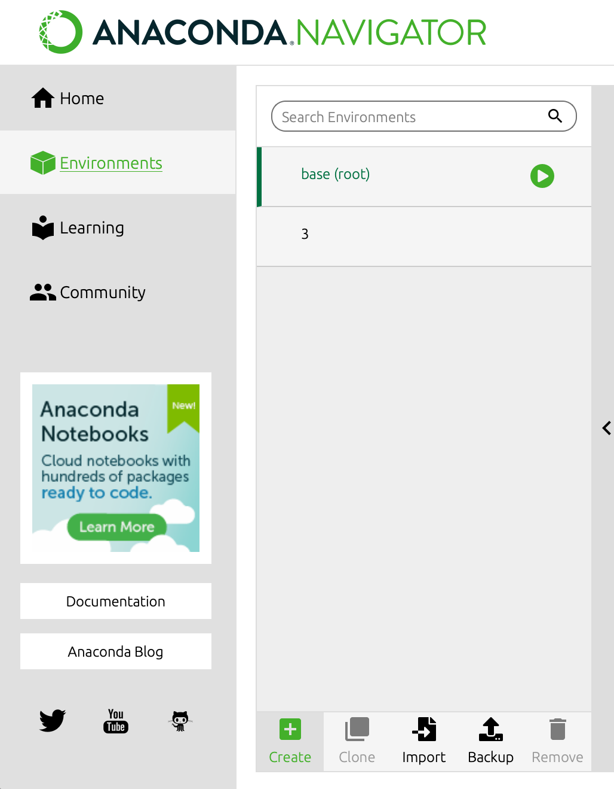
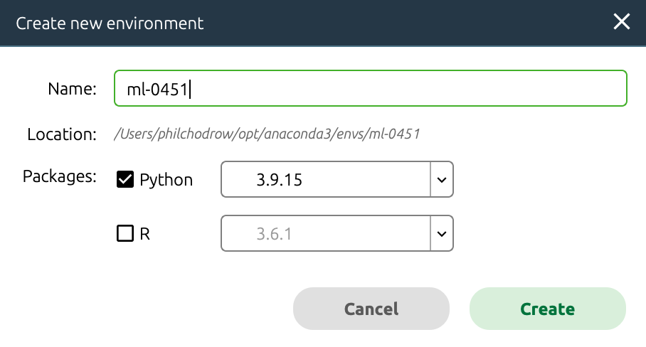
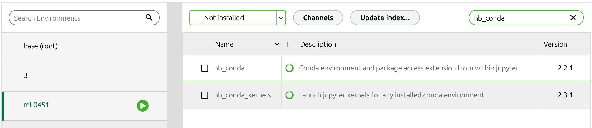
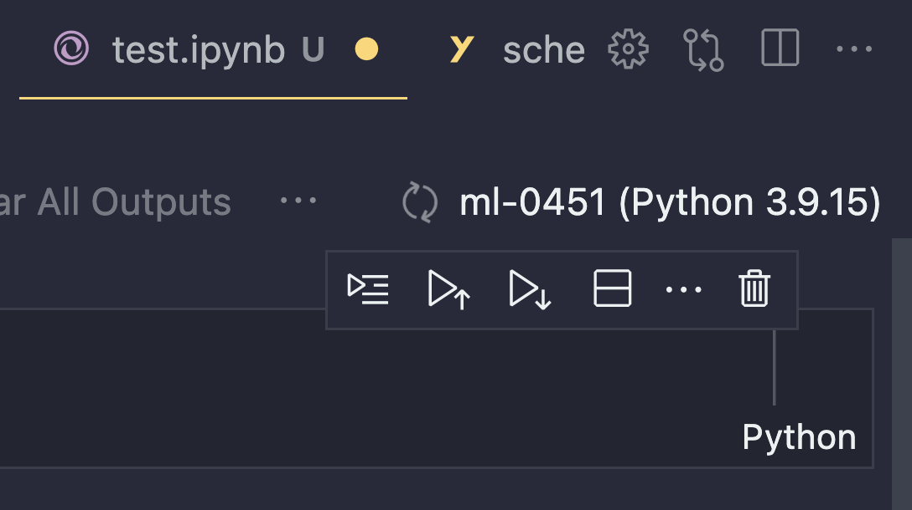
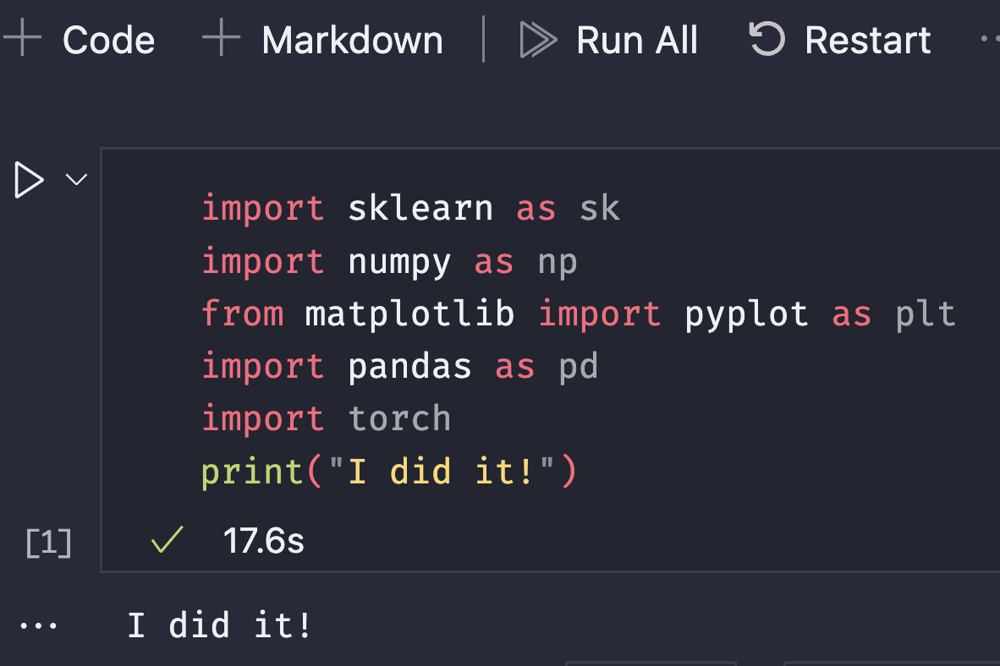
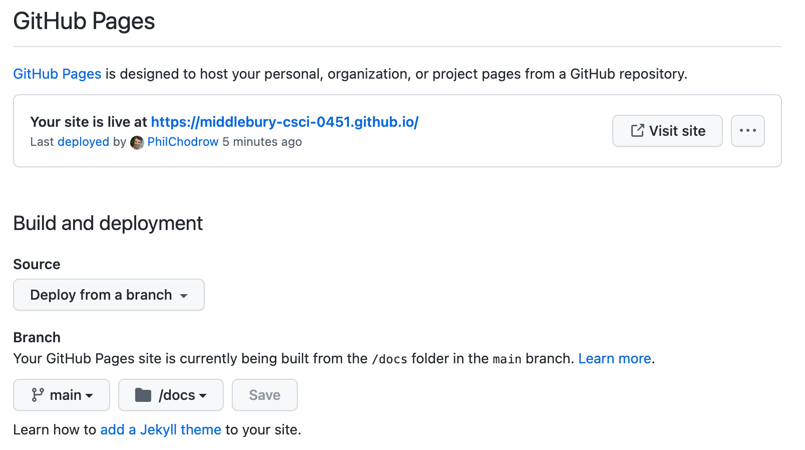

Software and Setup
Bell Luo ’24 contributed to these notes.
After following this set of instructions, you will be all ready to go for participation in CSCI 0451.
Boxes like this one will give you information on alternative options, such as using JupyterLab instead of VSCode.
Do note that you are more or less “on your own” once you choose to pursue this path, since we will be less able to help with any errors that may occur.
Slack
First, you’ll need to join Slack. Just follow the link on the Canvas Syllabus page to join our workspace.
You may use Slack in the browser, in the desktop client, or on mobile. You can make your own choices about notifications, but please do whatever you need to do to ensure that you’re able to check Slack on a regular basis.
Anaconda Python
An important part of CSCI 0451 is navigating the Python package ecosystem. You may have used Thonny, installed Python, or used pip before, but for this class we will be using a package manager called Anaconda.
If you are more familiar with the command line, then miniconda is recommended for you.
Install and configure miniconda by following these instructions.
Then, follow this guide. (Note the URL is now conda.io.)
To add channels, run this:
conda config --set channel_priority strict
conda config --add channels conda-forge
conda config --add channels pytorchRun the following to create an environment called ml-0451:
conda create -n ml-0451 python=3.9Then, you need to actually get inside the environment:
conda activate ml-0451Finally, you can install packages with conda install:
conda install jupyter nb_conda numpy matplotlib pandas scikit-learn seaborn pytorch torchvision torchtext torchdataYou are now ready to skip to the next section, Test Your Installation.
Getting set up with Anaconda is a somewhat detailed process, outlined below.
You should follow these instructions even if you already have Anaconda installed.
We recommend uninstalling and re-installing Anaconda if this is the case.
1. Install Anaconda
Install and configure Anaconda Python by following these instructions. Choose the installer appropriate for your operating system.
2. Add the relevant channels
Open the Anaconda Navigator program.
On the left-hand side, you will see a sidebar containing “Home”, “Environments”, and other options.
Click on the “Channels” button to the middle.
Click “Add” to add the following channels:
pytorchconda-forge
Finally, click “Update channels”.
2. Create the ml-0451 Environment

The Environments tab, with the Create button on the bottom.
An environment is a separate collection of packages that exists independently of any other versions of Python on your computer. Using environments allows us to have fine-grained control over which version of Python we use, which additional packages are installed, etc.
To create an environment in Anaconda, first open the Anaconda Navigator program. Then, navigate to the Environments tab. There, you’ll find the current existing environments, including the default base (root) environment.
Click the “Create” button to create a new environment.
In the resulting dialog box:
- Name your environment
ml-0451. - Ensure that the installed Python is some version of Python 3.9.*.
 Configuring the ml-0451 environment.
3. Install Packages
You will need to install several packages to the ml-0451 environment. Note that you need to do this even if you previously installed these packages to another version of Python on your laptop.
To add packages to the environment, first ensure that the environment is selected (it will be highlighted in green). Then, on the right-hand menu, search for the package you want to install. You may need to change the box on the top left from “Installed” to “Not Installed” in order to view packages that you have not installed yet.

Install the following packages:
nb_condanumpymatplotlibpandasscikit-learnseabornpytorchtorchvisiontorchtexttorchdata
I may ask you to install additional packages later on, or you may find it useful to install packages yourself in order to deal with problems or projects.
You’ll follow this same process to install them to the ml-0451 environment.
Test Your Installation
You can also use JupyterLab, which comes with Anaconda, to edit your notebooks.
Here is a tutorial for JupyterLab if you prefer that over VSCode.
And here is information on using Quarto with JupyterLab.
Open VSCode, or install it if you haven’t already.
Following these instructions, create a Jupyter Notebook in VSCode, using the ml-0451 Anaconda environment as the notebook kernel.
 Creating a notebook using the ml-0451 environment as the kernel.
Next, type the following code into the grey code cell that appears in the notebook:
import sklearn as sk
import numpy as np
from matplotlib import pyplot as plt
import pandas as pd
import torch
print("I did it!")Finally, run the cell.
If you get no errors, only the output of the print statement, then you did it!
 I did it!
GitHub and GitHub Pages
Create an account on GitHub if you do not have one already.
Git is a version control system that a lot of people uses; GitHub is one of the many places you can upload Git repositories to.
If you haven’t already, here’s a guide to Set up Git.
You can work with Git in the command line, inside VSCode, or using GitHub Desktop.
If you are comfortable working with Git from the command line, you can continue to do this!
If you are unfamiliar with Git, you can check out VSCode’s built-in Git functionality. Don’t worry about cloning, branches, or merge conflicts for now; the introductory video should suffice for now.
You can also download and install the GitHub Desktop client. (You will need to connect it to your GitHub account.)
Your Blog via GitHub Pages
Now let’s set up your blog. Your blog is the primary way in which you will demonstrate your learning in CSCI 0451.
On GitHub, navigate to our blog template repository. Fork the repository–this creates a copy of the repository under your own personal GitHub account.
Then:
- Go to GitHub’s “Settings” page and rename the blog
github_username.github.io, replacinggithub_usernamewith your GitHub username. - Configure GitHub pages to deploy from the
mainbranch and the/docssub-directory, as pictured below.

After a few minutes, try navigating to https://github_username.github.io. You should find an exact copy of the template website.
We haven’t modified it yet, but we will soon!
Great! You can publish your blog as a project website rather than as a user site.
Find out more on the difference and how to publish a project website.
In short, you can name your repository anything you want (say, csci-0451), and the published website will be at https://github_username.github.io/csci-0451.
You can also publish on a branch for cleaner diffs; read more here.
Clone your blog
Finally, clone your blog repository to your local computer in a place where you’ll be able to find it in the future. You can do this using the big green “Clone” button on GitHub. You can clone either using VSCode, GitHub Desktop, or at the command line with git or gh: all options are good!
Install Quarto
Here’s how the blog works:
- You modify special markdown files with extension
.qmdand Jupyter notebooks with extension.ipynb. - You use Quarto to transform these files into the HTML files that form your blog.
So, first, install Quarto.
Test Drive Quarto
Change modify the About page of your blog by modifying the file about.qmd. You can do things like change text or change the profile picture (it doesn’t have to be of yourself). Once you’ve made these changes, open a terminal in the location of your cloned blog and type the command
quarto previewAfter a few moments, a web browser window should pop up with a preview of your blog. If you navigate over to the About tab, you should see your changes.
Finalize and Publish
In the terminal, use Ctrl + C to stop the preview process. Then type the command
quarto renderThis time you won’t see a preview, but that’s ok! Quarto rendered our code into files under the docs/ folder. So now, all we have to do is publish that on GitHub.
Over in git, or GitHub Desktop, or inside VSCode, you should be able to see all the new and modified files that have been generated.
You are about to publish to the Internet.
Once you publish something, it is virtually impossible to un-publish.
So pause for a moment, think, and check that you are not accidentally uploading your password, or your embarrassing childhood photo.
Stage these files (git add), add a short commit message, and commit them to the main branch.
Then, push your commit to GitHub.
This sends your files back to GitHub.com (the “remote”), where it will immediately be published online.
After a minute or two, navigate back over to the URL housing your website and check that your changes have been made.
Optional: The VSCode Quarto Extension
There is a VSCode extension for working with Quarto documents which I highly recommend. Find it here. Here is a demo using this extension.
Nice Job!
I know it might have been a long journey, but you now have all the software you need to thrive in CSCI 0451. There’s also a lot of stuff here (Anaconda, VSCode, git+GitHub) that will help you in lots of other classes and projects.
References
- Quarto basics with VSCode.
- The Quarto docs are searchable!
- Getting started with GitHub Desktop
© Phil Chodrow, 2024